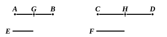
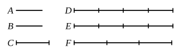
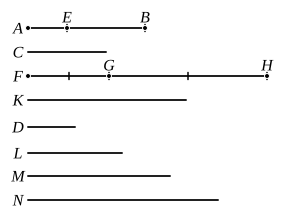
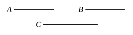
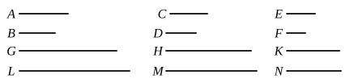
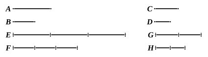
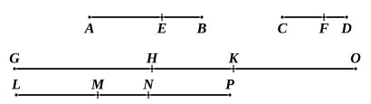

BOOK V. PROPOSITIONS.¶

If there be any number of magnitudes whatever which are, respectively, equimultiples of any magnitudes equal in multitude, then, whatever multiple one of the magnitudes is of one, that multiple also will all be of all.

Equal magnitudes have to the same the same ratio, as also has the same to equal magnitudes.

Of unequal magnitudes, the greater has to the same a greater ratio than the less has; and the same has to the less a greater ratio than it has to the greater.

Magnitudes which have the same ratio to the same are equal to one another ; and magnitudes to which the same has the same ratio are equal.

Ratios which are the same with the same ratio are also the same with one another.

If four magnitudes be proportional, they will also be proportional alternately.

If magnitudes be proportional componendo, they will also be proportional separando.
If there be three magnitudes, and others equal to them in multitude, which taken two and two together are in the same ratio, and the proportion of them be perturbed, then, if ex aequali the first magnitude is greater than the third, the fourth will also be greater than the sixth; if equal, equal; and if less, less.